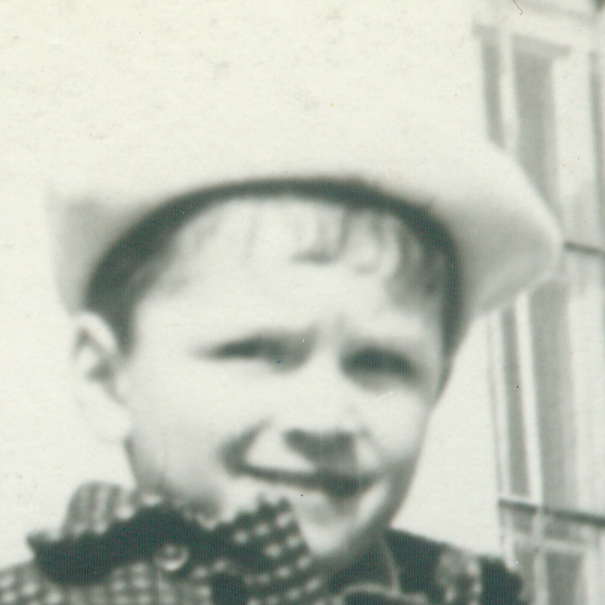
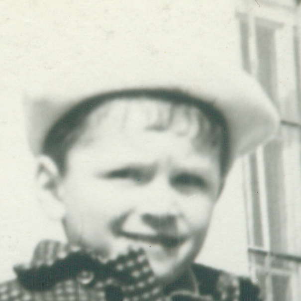
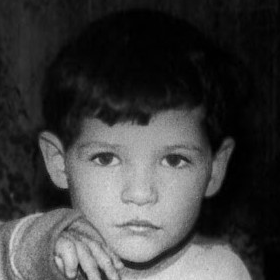
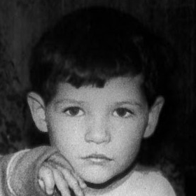

About
This interactive timeline is based on the history of a flat in Leningrad...
How to use the timeline
- Click the ticks on the timeline to reveal people in the flat.
- Hover icons to see names and life dates.
- Click multiple ticks to build the scene over time.


")
")
") 

")
") 
